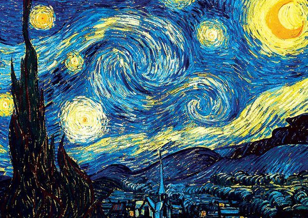
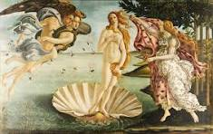
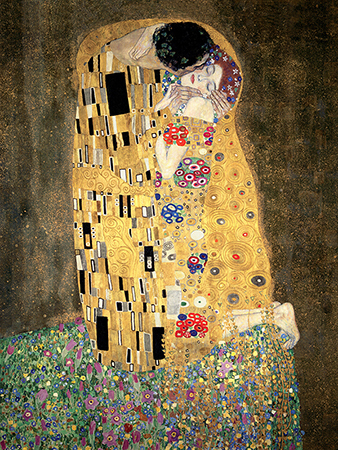
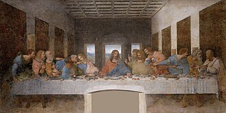

La noche estrellada
Vincent van Gogh
$120.000

La Gioconda
Leonardo da Vinci
$180.000

El grito
Edvard Munch
$950.000

La joven de la perla
Johannes Vermeer
$110.000

El nacimiento de Venus
Sandro Botticelli
$250.000

El beso
Gustav Klimt
$300.000

La ultima cena
Gustav Klimt
$190.000

Autorretrato
Van Gogh
$110.000

El hijo del hombre
Johannes Vermeer
$110.000

Angel caido
Alexandre Cabane
$500.000

El columpio
Jean-Honoré Fragonard
$200.000

Saturno devorando a su hijo
Francisco de Goya
$150.000